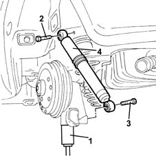
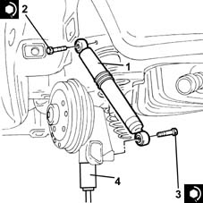

4420A30 l/h or r/h rear suspension damper (one) - r+r
- Path
- Procedures > 44 SUSPENSION AND WHEELS > 4420 REAR SUSPENSION > 4420A rear dampers and springs > 4420A30 l/h or r/h rear suspension damper (one) - r+r
- Kind
- repair procedure (removal / refitting; the operation number is the code)
- Applies to
- all engines; all production periods
- Interactive page
- https://sloeber94.github.io/elrnDB-lYpsln/en/#/2429242
Applies to: all engines; all production periods
 Removing
Removing
 Refitting
RefittingPosition the vehicle on the ramp.
FOR THE RIGHT REAR SHOCK ABSORBER
Proceed with removal 4450B08 right rear wheel r r .
FOR THE LEFT REAR SHOCK ABSORBER
Proceed with removal 4450B06 left rear wheel r r .
1. Partly compress the suspension using a hydraulic jack.
2. Undo the upper bolt fixing the rear suspension shock absorber to the bodyshell.
3. Undo the lower bolt fixing the rear suspension shock absorber ot the axle.
4. Remove the rear suspension shock absorber.

Applies to: all engines; all production periods
Refitting
Removing.
1. Place the rear suspension shock absorber back in its housing.
2. Tighten the top bolt securing the rear suspension shock absorber to the bodyshell to the specified torque.
 | Fastening | Component | Ø | Value (daNm) |
|---|---|---|---|---|
2 | Bolt | REAR DAMPER | M10 | (Bodyshell side) 7.6 ÷ 8.4 |
3. Tighten the lower bolt fixing the rear suspension shock absorber to the axle to the recommended torque.
| Fastening | Component | Ø | Value (daNm) |
|---|---|---|---|---|
3 | Bolt | REAR DAMPER | M12 | (Axle side) 9.5 ÷ 10.5 |
4. Remove the hydraulic jack.

Applies to: all engines; all production periods
FOR THE LEFT REAR SHOCK ABSORBER
Proceed with refitting 4450B06 left rear wheel r r .
FOR THE RIGHT REAR SHOCK ABSORBER
Proceed with refitting 4450B08 right rear wheel r r .
Remove the car from the ramps.